1Expedition
Every piece of work has a summit.
Every lead thread gets a goal with a summit: what done means, in a few words, like “PR merged with CI green”. Its route is the plan the agent already keeps, Claude's todo list or Codex's plan, and its last camps are checks Hercule sees itself: tests pass, review clean, PR open, CI green, merged.
One small line, the route, now says how far each thing is from done, what waits on you and what is stuck. It sits on today's sidebar row, fills a ledger, rides a Board that moves by itself, and climbs a mountain range in the Office.

A progress bar that is not a lie.
Every agent tool shows a todo list. None of them tells you how far the work is from done. Expedition draws the agent's own plan as a route, and ends it with checks Hercule sees for itself. The agent can tick its own boxes. It cannot tick “CI green”.
So the bar can go backwards, and says so. And when it stops, a small cloud says that too.
The same line in eight moments, at the sidebar's 272px
Line 1 is today's row: the title and its status word. Line 2 was the machine; now it is the route, with where it stands at the right. A lone thread costs nothing: same 52px, no extra word.
The sidebar, the Office, the ledger and the Board all draw the route.
The overview opens from the sidebar's Office button or ⌘⇧O. Its switch reads Office · Threads · Board; O, T and B pick one, ↑ ↓ walk the selection, ↩ opens it, esc closes. What you select stays selected in every mode, and one card answers it: it floats at the bottom left over the Office, and docks under the ledger and the Board, so it never covers a row.
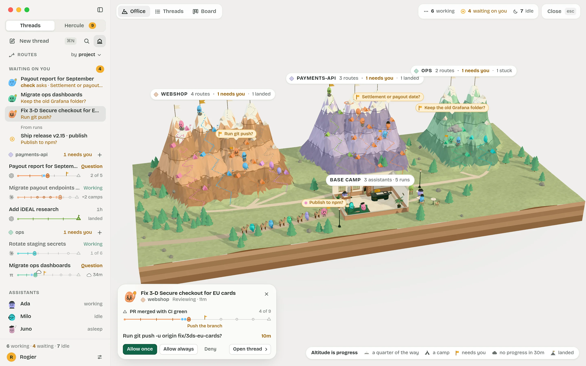

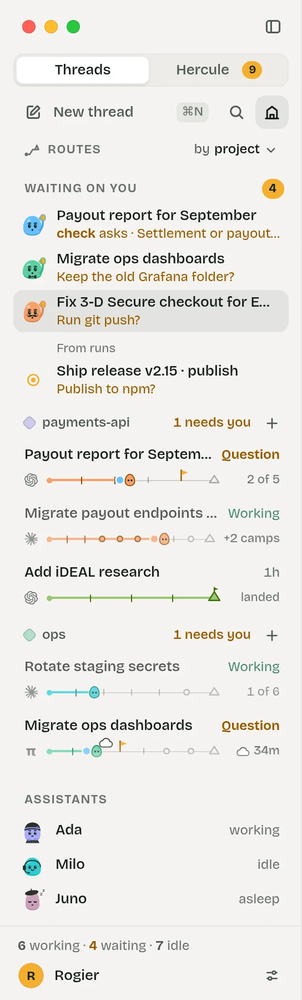
The sidebar: Routes, folded always there
Today's 52px row, with the route as line 2. Waiting on you stays on top. Projects keep their order, newest first, five rows each. The words at the right say where a route stands: 2 of 5, +2 camps, a cloud and 34m, landed.
Partners do not get rows of their own. They ride on their lead's rope, as dots behind its head; a click on the route unfolds their own small routes. The lens above the list groups it by project or by stage, and the ledger follows.
While the overview is open, a click on a row selects that thread in the overview (the Office flies to it); a double click, ↩ or “Open thread” opens it. The Office button stays pressed.
Office: the Range spatial
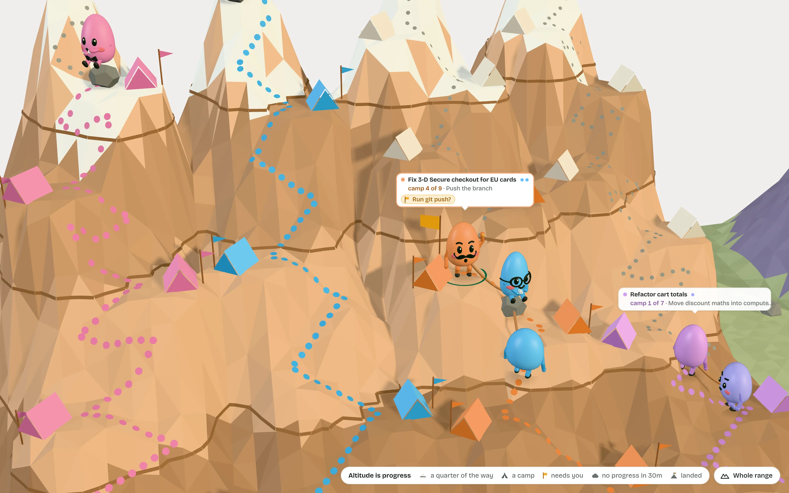
Each project is a low-poly massif in its tint, and every lead's goal is its own peak. Every summit stands at the same height, so altitude is progress: the contour lines at a quarter, half and three quarters are the chart's gridlines, and snow starts near the top. Strip the scenery and a bar chart remains.
A trail zigzags up to each summit, climbed in the lead's colour and faint beyond. Working climbers walk uphill; idle ones sit on a rock. A team that waits on you plants a marigold flag and waves, a stuck one sits under a grey cloud, a landed one sits by its summit flag. Base camp holds your desk and the assistants, and the runs are a mule caravan on the valley road.
Labels follow the camera: far away, one pill per mountain and only the asks; closer, every team's tag with its camp and its ask. Click a climber and the card opens; click again to open the thread. Drawn by the Office's own builder: see the Range alone.
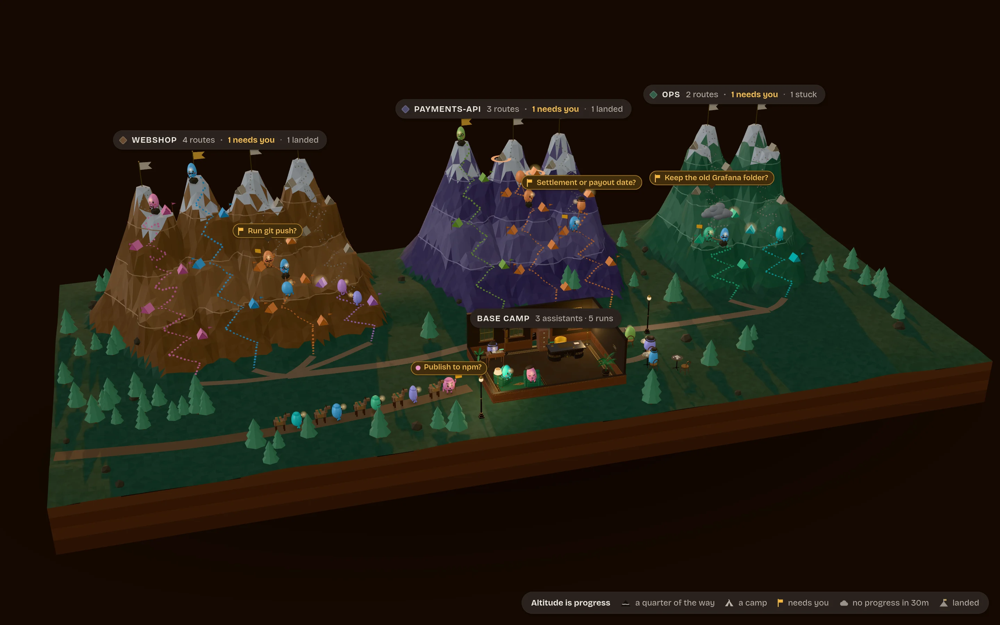
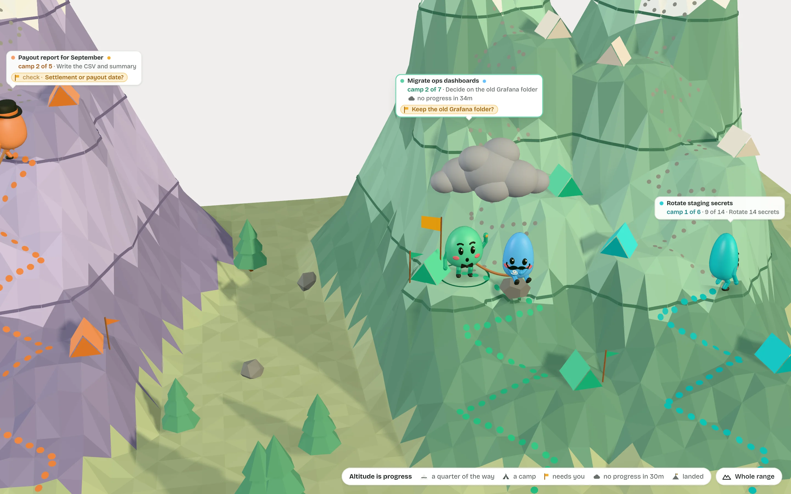
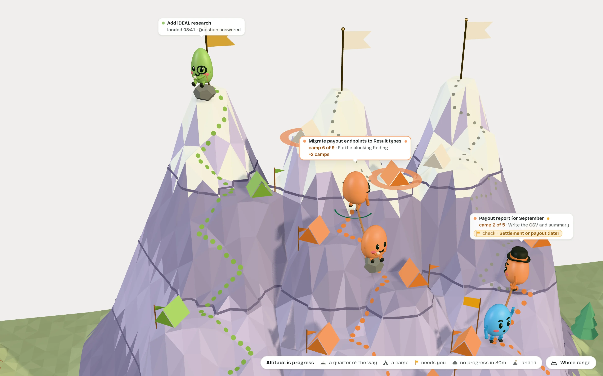
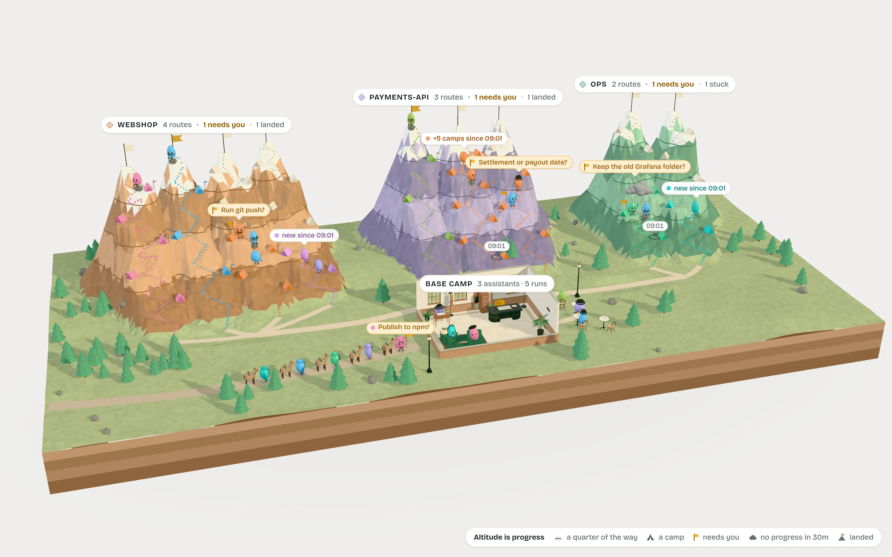
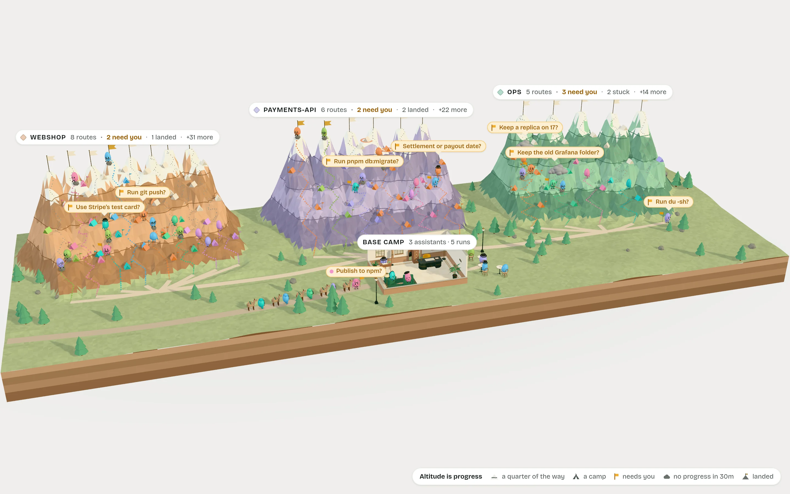

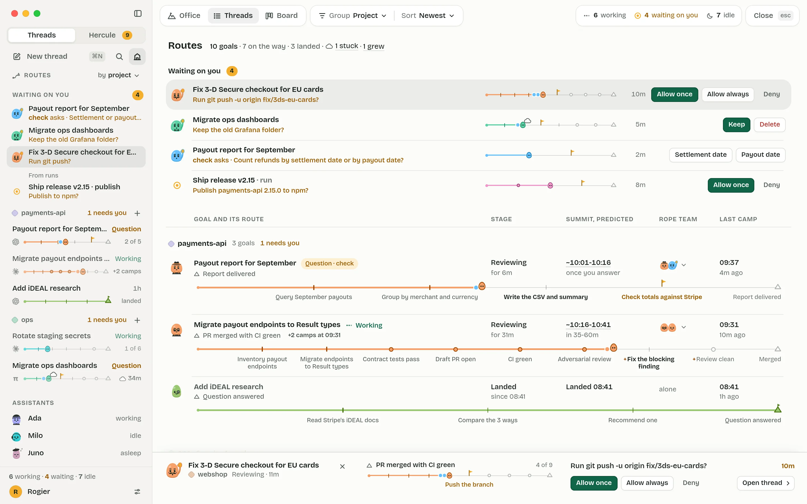
Threads: Routes precise
The expedition ledger. One row per goal: its summit, its stage and how long it has been there, its summit predicted as a range (“~10:06-10:26, once you answer”), its rope team, its last camp. Under it, the route at full width with every camp named and the next one in bold.
Hover a camp to see when it was reached and who saw it. Waiting on you comes first, each ask with its answer buttons. Group by project or stage; sort by newest, furthest along or soonest summit. A run's route is its workflow: each step is a camp.

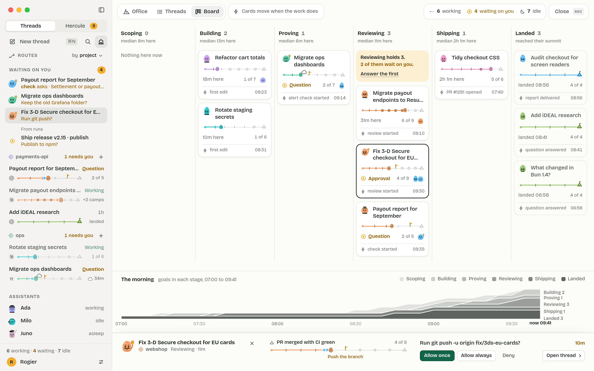
Board: a kanban that moves itself analytical
Scoping, Building, Proving, Reviewing, Shipping, Landed: the stages every coding journey passes. A card moves when Hercule sees the signal (a first edit, a first test run, a review partner starting, a PR, CI, the merge), and it says what moved it. Nobody drags a card; the Board says so in its top bar.
Each column shows its count and the median time goals spent in it. Where work piles up, a callout says so in words: “Reviewing holds 3. 2 of them wait on you.” Along the bottom, the morning's flow from 07:00.

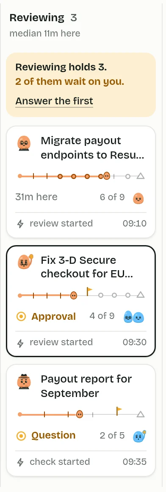

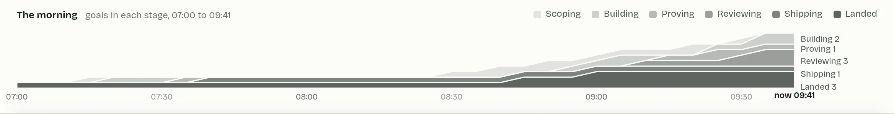
09:41. You are back from the school run.
You left your desk at 09:01 and started four threads from your phone on the way. Forty minutes later, this is what changed, in the order it matters.
-
09:41 · ⌘⇧O
The overview opens on the catch-up.
“6 routes climbed 14 camps.” Four chips say what needs you, what is stuck, what grew and who reported back. Nothing to read twice.
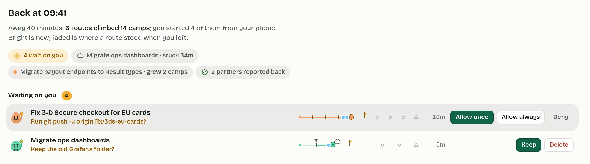
-
The sidebar, for free
Bright is new.
Every route keeps the part it climbed before you left faded, and a small notch where it stood. What moved while you were out is the bright part. The sidebar does the catch-up without a single extra row.
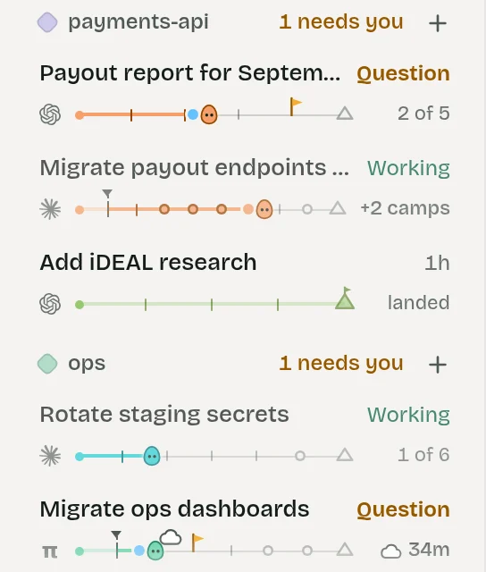
-
One move
Allow the push.
The 3-D Secure fix waits at its fifth camp for your OK to push. The card answers it: the flag comes down, the head moves on to “Review clean”, and a toast offers Undo.
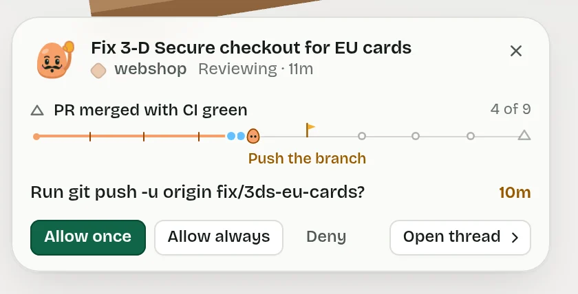
-
The cloud
The dashboards are stuck, and it is partly on you.
No camp in 34 minutes. The cloud tells the story since its last camp, and how to unblock it: the folder question.
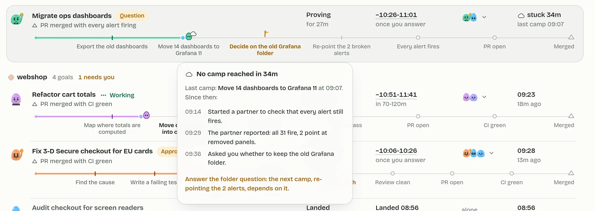
-
+2 camps
The Result migration grew.
Its review found a blocking issue, and the agent added two camps. The route went from 6 of 7 to 6 of 9: the bar moved back, honestly, and says why.
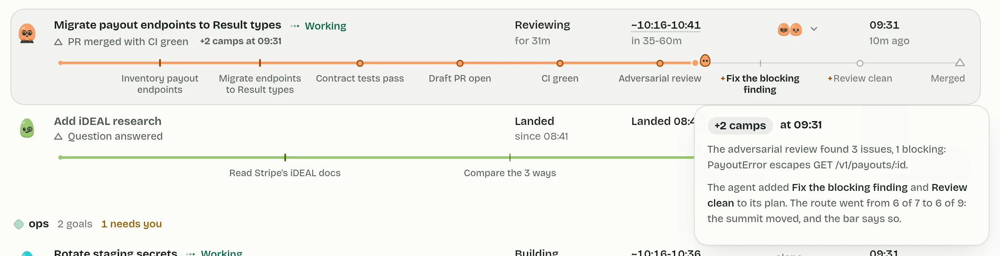
-
B, the Board
The Board moves a card by itself.
The cart refactor runs its first test, and its card glides from Building to Proving. The top bar says what moved it. You never dragged anything.
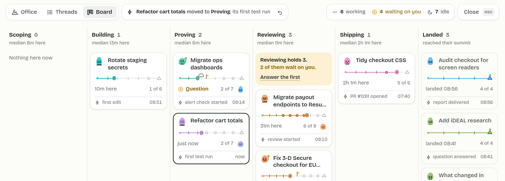


What Hercule would need
The first slice is one route line on today's row, read from the agent's own todo list, before a single mountain is drawn.
Threads linked to Tasks
A goal is a Task, a unit of human intent. Spec 02 lists taskId on a Session; the contract does not have it yet.
A summit per goal
Written by a Text Generation from the first prompt, the way a title is, and editable. One small call per goal, once.
The plan, read
The latest plan transcript item (Claude's todo list, Codex's plan) read into done, total and current at each turn's end. A parse, no model call.
Checks Hercule sees
Test runs from tool calls and their exit codes; the PR and CI from the GitHub Connection; the merge. These are the rings.
A stage and its signal
Rules on signals (first edit, first test run, a review partner starting, a PR, the merge) give the stage, when it began and what moved it, kept as a history.
Who started whom, and when you looked
startedBy on the contract for rope teams (it is stored already), and a last-seen mark per user per thread for the catch-up. The summit ETA is arithmetic over camps left and past camp times, shown as a range.
New words it proposes for GLOSSARY.md: goal (a lead's Task, seen as a climb), summit (what done means), route and camp (the plan plus the checks), and stage (the Board's six columns).
What it costs
| Per streamed token | Nothing. A route redraws when a turn ends or a check arrives. |
| While idle | Nothing. The sidebar's routes are about twenty small static elements per row; nothing animates. |
| Per event | One parse of the plan item at a turn's end; one stage rule run on a signal; the ETA's arithmetic. |
| Per open of the overview | The ledger and the Board draw once. The flow strip reads the morning's stage history once. A move waits for the pointer to leave. |
| The Office | Measured: one merged terrain mesh (about 65k triangles); 221 draw calls for the whole range (303 in the swarm), 33 for a team close-up. It draws only while shown and pauses when another mode is, at most 30 fps for ambient life, and 0 frames once settled under Reduce Motion. With no WebGL the flat Range (one SVG) tells the same truth. |
| Model calls | One Text Generation per goal, for its summit. Nothing else. |
Risks, and the answers
| Plans change, and progress goes backwards. | Shown, not hidden: the route grows, the bar moves back, and the row says +2 camps until you look. |
| An agent ticks its own plan too early. | Ticks are the agent's word; the last camps are rings Hercule sees. A tick can be wrong; a ring cannot. |
| An agent keeps no plan (pi has no todo list). | Its route is only the checks Hercule sees, and it reads “setting out” until a plan exists. |
| A question has no route. | Its summit is “Question answered”, a short route that lands when the answer does. |
| The stage rules misfile a card. | Every card says what moved it (“first test run 09:22”), so a wrong move is visible, and a rule can be fixed. |
| ETAs are wrong. | Ranges, “once you answer” when the clock waits on you, and “can't tell” when a route is stuck. |
| Mountains are a gimmick. | Strip the scenery and the altitude is still a true chart: the flat Range draws exactly that. |
The live window
- The Office: the RangeEveryday, 09:41. Click a climber; the card follows.
- Threads: RoutesThe ledger. Hover a camp; try the Group and Sort lenses.
- The BoardSix stages, the bottleneck, the morning's flow.
- Back at 09:41The away state: the catch-up, bright and faded routes.
- The stuck routeThe cloud over the dashboards, explained.
- A route growsTwo camps appear and the bar moves back.
- The Board moves a cardBuilding to Proving, with Replay.
- A thread openIts route under the tabs; a click opens the overview.
- The swarm35 threads in view. Try every mode.
- Orient ExpressThe ledger in the dark theme.
- The Range aloneThe Office full window, on the 3-D Secure rope team; its own switch has every state.
- Back to the bookSeeing all the work: five directions.